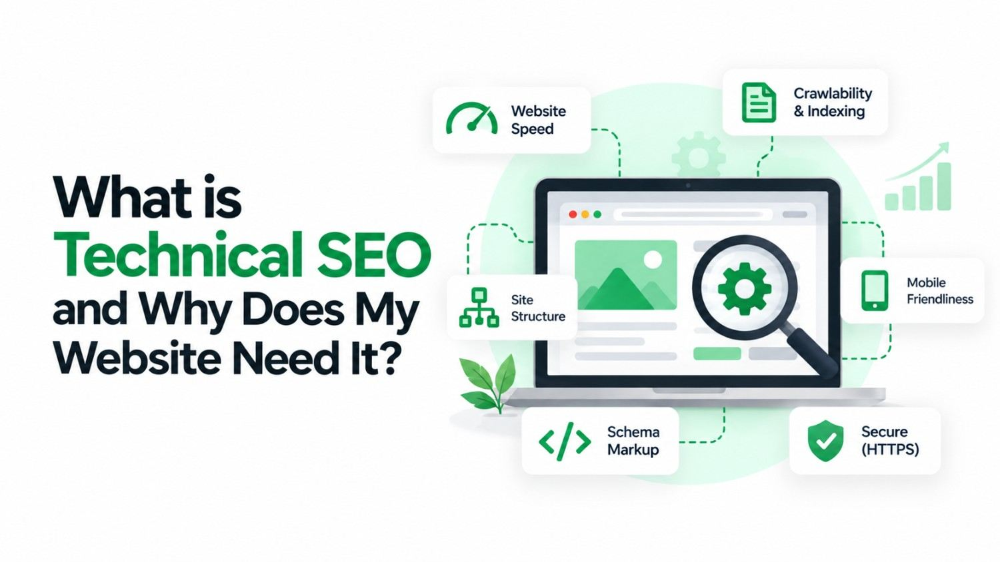

You invested time and money into your website. The design looks clean, the content is written, and the services are clearly listed. Yet when you search for your business on Google, you are nowhere to be found or stuck on page four where no customer will ever scroll.
The frustrating part? The problem is rarely your content. It is usually something hidden beneath the surface - something most business owners never think to check. That hidden engine is called technical SEO, and it is the foundation on which every high-ranking website is built.
What is Technical SEO?
In simple terms, technical SEO is the process of optimising the backend structure of your website so that search engines like Google can find it, read it, and rank it effectively.
Think of it this way. You can write the most valuable article in the world, but if it is locked inside a room with no door, no one will ever read it. Technical SEO is the door - it makes your content accessible to Google's crawlers in the first place.
Here is how it differs from the other two branches of SEO:
- On-page SEO focuses on keywords, headings, and the content visible on your pages.
- Off-page SEO is about building authority through backlinks and external mentions.
- Technical SEO works in the background - ensuring the structure, speed, and code of your site meets Google's standards.
All three matter. But without a solid technical foundation, neither great content nor strong backlinks will deliver the rankings you are working toward.
Why Technical SEO Is Important for Your Website
Google does not rank websites based on effort alone. It ranks pages that it can crawl, index, and determine as reliable for its users. If there are technical barriers at any stage of this process, your pages will not rank - regardless of how good your content is.
According to Google's official Search documentation, Googlebot discovers pages by following links and reading your site's structure. Any obstacle in that journey - a slow load time, a broken page, a misconfigured robots.txt file - directly reduces your visibility.
A website with poor technical SEO is like a well-stocked shop with a locked front door and no signboard. The products are there. The customers are not.
Key Elements of Technical SEO
Here is a plain-language breakdown of the most important technical SEO elements every Indian business website should have in place.
Crawlability - Can Google Find Your Pages?
Crawlability refers to how easily Google's bots can move through your website and discover all your pages. Two key files control this: your robots.txt file (which tells Google which pages to visit or skip) and your XML sitemap (a map of every important page on your site).
A misconfigured robots.txt can accidentally block Google from your entire site. A missing sitemap means Googlebot has to find your pages on its own and it will likely miss some. Submitting your sitemap through Google Search Console is one of the first steps in any proper technical SEO checklist.
Indexing - Is Google Storing Your Pages?
Crawling and indexing are not the same thing. Google might visit your page but choose not to store it in its index and only indexed pages can rank. Common indexing issues include duplicate content, pages marked with a "noindex" tag by mistake, or thin pages that Google considers low-value.
You can check which of your pages are indexed by typing site:yourwebsite.com into Google Search. If important pages are missing from the results, there is an indexing problem that needs fixing immediately.
Website Speed Optimisation
Page speed is a confirmed Google ranking factor. A website that takes five seconds to load on mobile will not only rank lower - it will also lose 90% of visitors before they see a single word of your content. For businesses in Kerala targeting mobile-first customers, this is non-negotiable.
Speed issues often come from uncompressed images, too many plugins, cheap shared hosting, and render-blocking scripts. Tools like Google PageSpeed Insights give you a free, actionable report in under a minute.
Mobile Optimisation
India has over 750 million smartphone users. Google uses mobile-first indexing, which means it evaluates your mobile version of the website - not the desktop version - when deciding rankings. If your site looks broken on a phone screen or has tiny text and unpinch-able images, you are being penalised right now.
A truly mobile-friendly website loads fast, has readable text without zooming, and makes it easy to tap buttons and fill forms on a small screen.
Core Web Vitals
Core Web Vitals are Google's set of specific measurements that evaluate how good the experience on your page actually feels to a real user. The three signals are:
- LCP (Largest Contentful Paint): How fast does your main content load? Target: under 2.5 seconds.
- INP (Interaction to Next Paint): How quickly does your page respond when a user clicks something? Target: under 200ms.
- CLS (Cumulative Layout Shift): Does your page jump around as it loads? Target: below 0.1.
Failing Core Web Vitals does not just hurt page experience - it hurts your rankings. Google has baked these signals into its algorithm since 2021.
URL Structure
A clean URL tells both Google and your visitor what a page is about before they even click. Compare these two URLs for a Kochi bakery: /page?id=82 versus /custom-cakes-kochi. The second one is infinitely more useful to both search engines and humans.
Good URLs are short, descriptive, use hyphens instead of underscores, and include relevant keywords naturally. Avoid random strings of numbers and letters that tell no one anything.
Structured Data and Schema Markup
Schema markup is a type of code you add to your website to help Google understand what your content means, not just what it says. For a hospital in Thrissur, schema can tell Google: "This is a hospital, these are the doctors, these are the services, these are the opening hours." Google can then display this information as rich snippets in search results - making your listing stand out visually from competitors.
Structured data is especially powerful for local businesses, e-commerce products, FAQs, and reviews - all common content types for Indian SMEs.
HTTPS and Website Security
If your website still runs on HTTP - not HTTPS - Google marks it as "Not Secure" and actively demotes it in rankings. Every website, no matter how small, needs a valid SSL certificate. It protects user data, builds trust, and is a confirmed Google ranking signal.
Most Indian hosting providers offer free SSL certificates. If yours does not have one installed, that is the very first thing to fix today.
Fixing Broken Links and 404 Errors
A broken link - one that leads to a page that no longer exists - creates a poor experience for both users and Google's crawlers. Every broken link wastes a crawler visit that could have been used to discover and index a valuable page.
Broken links are especially common after website redesigns, when old URLs are not properly redirected to their new equivalents. Regular audits using tools like Google Search Console or Screaming Frog catch these before they compound into serious ranking problems.
Think Your Site Has Technical SEO Issues?
Our team runs a comprehensive technical audit and fixes what is hurting your rankings - no jargon, just results.
Common Technical SEO Problems in Indian Businesses
After working with dozens of businesses across Kerala and India, we see the same problems come up time and again. Here are the most common ones:
-
Slow shared hosting: Many Indian businesses opt for the cheapest hosting plan available. These shared servers are overloaded, and the result is a website that crawls - literally. Your ₹99/month hosting plan is costing you far more in lost rankings.
-
Poor mobile optimisation: Websites built five years ago on desktop-first themes often fall apart on smartphones. Since the majority of searches in India happen on mobile, this is one of the costliest mistakes a business can make.
-
The developer–SEO gap: One of the most common frustrations we hear: "The SEO team says the developer needs to fix it, and the developer says it is an SEO problem." This blame cycle leaves real issues unresolved for months. Having both skills under one roof eliminates this entirely.
-
Cheap themes and bloated plugins: Free WordPress themes and dozens of installed plugins create code bloat that dramatically slows sites down, introduces security vulnerabilities, and sometimes blocks crawlers by accident.
How Bamboost Handles Technical SEO Differently
Most agencies separate their web development team from their SEO team. This creates the exact developer–SEO blame cycle described above and your website rankings suffer the consequences while both teams point fingers.
At Bamboost, our web developers and SEO specialists work as one integrated team. When we build or audit a website, technical SEO is built into the process from day one - not bolted on as an afterthought. Every page we touch is evaluated for crawlability, indexing, speed, structured data, and mobile performance simultaneously.
If you are ready to stop guessing and start ranking, our technical SEO services cover everything from a full site audit and Core Web Vitals fixes to schema markup implementation and crawl error resolution - all handled by a single team that speaks both development and SEO fluently.
Frequently Asked Questions
What is technical SEO in simple terms?
How is technical SEO different from on-page SEO?
Does website speed actually affect Google rankings?
Conclusion
Technical SEO is not a luxury reserved for large corporations. It is the foundation that every website - from a small boutique in Kozhikode to a growing e-commerce brand in Bengaluru - needs in order to compete on Google.
Without it, your content cannot be found. Your pages cannot be ranked. And your business remains invisible to the very customers who are searching for exactly what you offer.
Start with a free audit of your website. Use Google Search Console to check for crawl errors, run a PageSpeed Insights test on your homepage, and verify that your site is on HTTPS. These simple first steps often reveal the biggest ranking blockers and fixing them can produce results faster than any content update or link-building campaign.